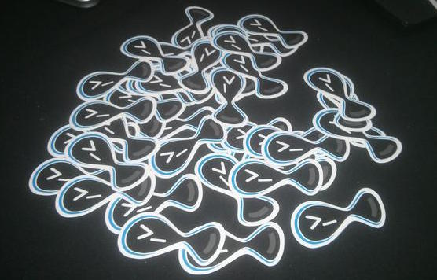

Mastering Drupal 8 Development

About me

About us and who maintain this project?

David Flores | @dmouse
Eduardo García | @enzolutions

Jesús Manuel Olivas | @jmolivas
Omar Aguirre | @omers
Supporting organizations


Spread the word and love.

@drupalconsole | #drupalconsole
Where do you find the project?
Landing Page
http://drupalconsole.com/
Documentation
https://drupalconsole.com/docs/english
Support
http://bit.ly/console-support
Drupal Console - 101
General features
Remote commands
Multi site
Autocomplete support
Support for acquia desktop installations
Tips
#Protip 1
Use multilanguage feature
# ~/.console/config.yml
application:
environment: 'prod'
language: en
editor: vim
temp: /tmp
Languages available: en, ca, es, fr, hi, hu, pt_br, ro, ru, vn, zh_hans
#Protip 2
Use --generate-inline
$ drupal generate:entity:config --generate-inline
#Protip 3
Use --generate-chain
$ drupal generate:module --generate-chain
Languages
CMI
config:debug
config:override
config:export:single
config:diff
Cron
cron:debug
config:execute
config:release
Update
generate:update
generate:post:update
update:debug
update:execute
Create
create:comments
create:nodes
create:terms
create:users
create:vocabularies
Chain
chain:debug
chain
Database
database:client
database:dump
database:restore
database:table:debug
database:drop
Code Generation
generate:entity:content:bundled
generate:event:subscriber
generate:plugin:views:field
generate:form
generate:form:alter
generate:routesubscriber
generate:plugin:ckeditorbutton
generate:plugin:mail
Images
image:styles:debug
image:styles:flush
Site
site:install
site:debug
site:import:local
site:statistics
State
state:debug
state:delete
state:override
Others
node:access:rebuild
plugin:debug
server
update:entites
views:plugins:debug
Contributors
https://drupalconsole.com/contributors
Upcomming implementations
Drupal Commerce
Meta Tag
Page Manager
Rules
scheduled Updates
[Your module here]
Questions & Feedback
Feel free to stalk us or ask any question at:
@enzolutions | @drupalconsole
http://bit.ly/srijan-mastering-d8